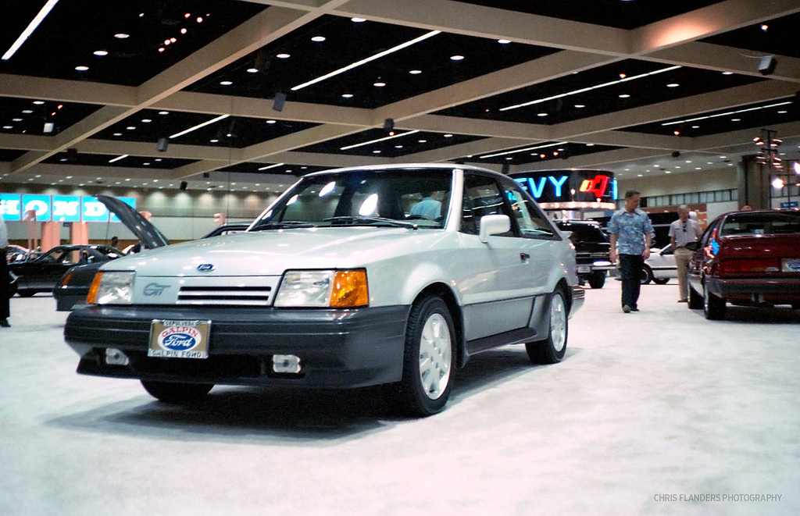
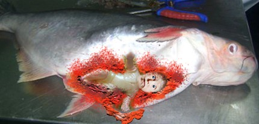
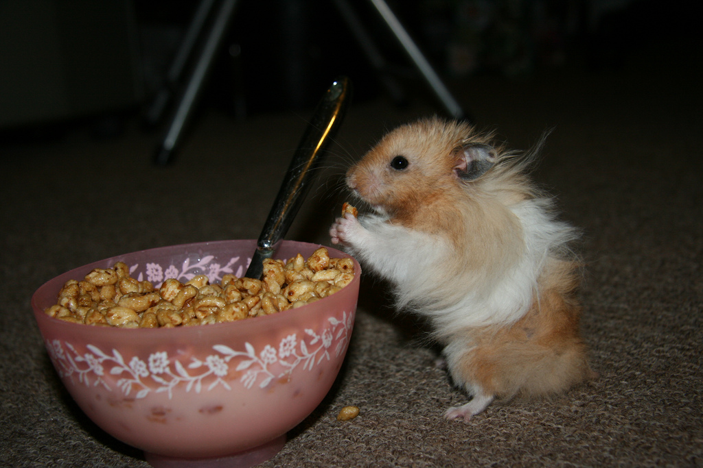

Don't Piss off the Guy Who Buys Your Dinner

One of the seniors worked in the produce dept. He seemed to have figured out how to get by working in a supermarket without too much stress. Everybody called him by his first two initials, but the store manager called him Woody since his last name was Woods. The store manager would call out over the loudspeaker "Adam,... Woody, Carriages. ..., Adam,... Woody carriages. Bring in ALL the carriages."
He did it just to break the guy's spirit. He couldn't.
Woods already drove a Powder Blue 1986 Ford Escort, and his father was forcing him to play football otherwise he considered him "gay." He didn't really need a 60 something old man trying to publicly humiliate him.
Woods was a good guy though. He had some good advise for the younger less experienced guys. "When a girl is going down on you, always keep your thumbs up. That way if they try to bite you, you push in on their eyes until they let go."
Or about how if your hair was wavy like his, you could tame it down in the morning by wearing a baseball cap while your hair was still wet. He had some funny sayings too. After work, he would sit in the passenger seat of his car with the feet hanging out to change from work boots to sneakers and we would always say, "My dogs are barking tonight."
Woods hated the store manager, as we all did. I remember the manager would tell him to bring him some asparagus, and pull his truck around front. Woods would spit on the asparagus, rub it on the floor, then when he went to get pull around the manager's truck he would do a lap around the parking lot with the ebrake pulled.
He also taught the guys how to relax while collecting carriages (shopping carts) Whenever we were called outside for carriages, Woods would say, "Come on guys, let's take a lap." This meant we would all walk around the entire shopping plaza looking for one or two stray carriages that made their way back there. It was a loophole that wasted a good 5 to 10 minutes of our hourly wage time.
One of the younger assistant managers, Roger, who aspired to be as big a ball buster as the store manager, had us figured out. One night as we took our lap, he opened up the bay door in the back of the store and yelled, "I caught you! No more taking laps!"
After we made it back out front of the store, we were ready to take our 15 minute break. Roger had a problem with that too. We had a habit of all going over to the pizza place for a couple slices for our dinner. According to Roger, we were squeezing out 5 to 10 extra minutes. From now on, only one of us could go over there, and we had to ask him if he wanted any slices while we were at it.
Most nights, I became the designated pizza buyer. Every night Roger would tell me to order his pizza extra hot. I would just tell the girl to "BURN THEM" for me and she would.
Don't piss off the guy who buys your dinner.
Photo by GraphiChris 
Related posts
I Came up Sour. Your Eyes Will Drop to the Floor.
The boys heard that the new assistant store manager, was married to a lunch lady at their old grammar school…

Rule #2073: Never Lie to Your Kids
Don’t lie to kids or withhold the truth from them. Most little kids are smarter than you give them credit…

Apples of your cheeks should be called tomatoes of your cheeks
Apples of your cheeks should be called tomatoes of your cheeks because when you punch them they split open like…

Why Your Boyhood Pain Never Works out the Way You Plan
I'll never forget the event that lead to my eventual disappearance. I came home from my math tutor and found…